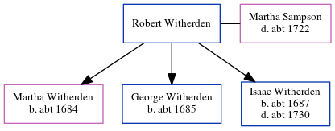

Martha Witherden (née Sampson) - c1722
[ Home ] | [ Calendar ] | [ Surnames Index ] | [ Errors ] | [ Family History ]Martha Sampson was the 7 times great-grandmother of Nigel Horne and married Robert Witherden (with whom she had 3 children: Martha, George and Isaac) in St Peters, Thanet, Kent, England on 10 Jul 1682.
She died c. 1722 and was buried in St Peters on 19 Jul 17221.
Children
- Martha was born c. 1684
- George was born c. 1685
- Isaac was born c. 1687
Citations
- Kent, Canterbury Archdeaconry burials 1538-1988 - Findmypast
Media
England Marriages 1538-1973 - R_847899972
England Marriages 1538-1973 - R_847899972/2
Kent, Canterbury Archdeaconry burials 1538-1988 - GBPRS/CANT/D/95238504
Family Tree
Map
Generated by ged2site. Last updated on Jul 3, 2024
Known Issues
Death date (abt 1722) has no citations
Marriage date (10 Jul 1682) has no citations
Date of death is known, but not place